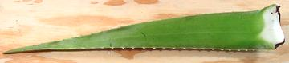
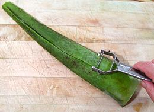
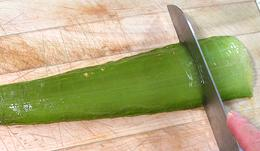
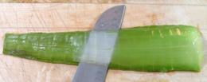
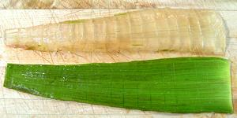
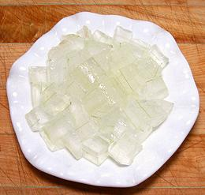

SAFARI
Users
Caution:
This plant is highly confused. There are no less than 16 scientific names that are actually synonyms of "Aloe Vera". There are many varieties of Aloe Vera, named and unnamed. Some are quite toxic, and even edible ones can be somewhat toxic in different regions. Symptoms can vary, but extreme rashes and welts have been reported.Identification of any particular Aloe Vera plant must always be suspect, as they are more often mis-identified than correctly identified. Some "experts" say var chinensis is the edible one, others say it is a toxic one. While external use is probably harmless, if you intend to eat it, use only Aloe Vera purchased from a reliable produce market.
Aloe Vera gel cubes, rinsed and par boiled, are a little crunchy and have a faintly grassy, slightly bitter and noticeably medicinal taste (so what did you expect from a medicinal plant?). It is not an unpleasant taste, and gel cubes are used in recipes, mainly in India and Southeast Asia. In India the use is often in curries or stir fries, but in Malaysia and Singapore it is most often used in fruit cocktail like desserts, and in beverages.
It is important to note that, though aloe vera grows well in difficult regions, ethnic recipes are all of an "occasional use" nature - only the "health conscious" in North America call for guzzling the stuff. This cautious usage by those with long experience suggests to me that heavy use is not to be recommended - see also Health & Nutrition, below for further evidence.
I have seen recipes that call for using the green part as well as the gel, but others caution against that, it can give you quite a case of the runs.
Preparing an Aloe Vera Leaf
This process should take you about 10 minutes per leaf, including some time for cleaning up the slime.

Here is an aloe leaf, 20 inches long, flat side up, weighing 10-3/8
ounces. This leaf was purchased from a large multi-ethnic market in
Los Angeles (Altadena, actually) for 2015 US $0.99 each.

Here we have our aloe leaf flat side down, with the tip and base cut
off, and are starting to peel it. A very sharp peeler is preferred, and
make sure you remove all the green from the round side and edges, because
it contains a toxic latex.

The leaf is now peeled on the round side, and we are cutting the gel
into cubes. Just cut down to, but not into the flat side. You may make
cuts both ways to make cubes (quick and clean) or just crosswise, and
cut the strips into cubes later (better control, not as quick, and a bit
messy).

Now you slice the gel from the flat side, just the same as skinning a
fish fillet. Keep the leaf close to the edge of the cutting board so
the knife handle is off the edge of the board and the blade will lie flat
against the flat side. You want the blade to slide along the flat side
of the leaf, not cutting into it at all, but cutting all the gel free
with no significant amount left behind.

Here the gel is completely free of the flat side of the leaf. Note the
few bits of green still adhering to the gel. These should be cut away.

Now we have our final product, cubes of aloe vera gel. This 10-3/8 ounce
leaf yielded 6 ounces of gel, 53%. These cubes must be well rinsed, and
some recommend leaving them in a strainer until the liquid gel has
dripped out. They must then be cooked before consumption.
Health & Nutrition
Very little reliable research has been done on aloe here in North America, but indications are that caution is advised. The reason there is so little formal research is that most health research here is financed by the pharmaceutical industry, though the money may be "laundered" through one or more levels of "nonprofit organizations". This industry is rather uninterested in studying natural products they can't patent and charge a lot of money for.
The safety and effectiveness of aloe vera extracts for both consumption or cosmetic uses is little known, and studies showing positive results are often countered by other studies showing negative results. On the other hand, the "alternative health" industry is perfectly happy to base their claims on inadequate studies, or even on no studies, if there is money to be made.
There is some weight of evidence that aloe gel can help with first and second degree burns, and possibly genital herpes and psoriasis, but other topical uses have no reliable evidence or what evidence is available is negative. It is known that in certain doses aloe vera gel can be at least mildly toxic, the main symptom being serious diarrhea.
Some products formerly used the latex from the green parts of the leaf, particularly in over the counter laxatives. Use of the latex and/or extracts from it is now banned by the FDA for lack of evidence it is safe.